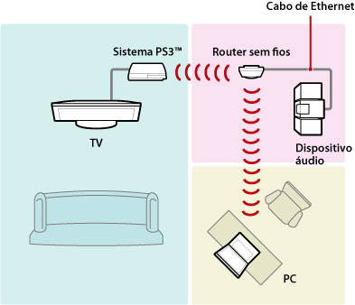
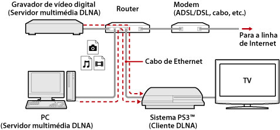
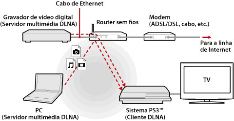
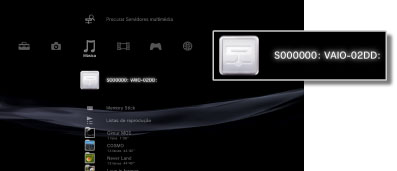
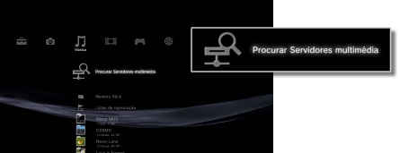

Definições > Definições de Rede > Conexão de Servidor multimédia
Conexão de Servidor multimédia
Ajuste as definições para a ligação a dispositivos que suportam DLNA.
| Activar | Activar a ligação a dispositivos que suportem DLNA. |
|---|---|
| Desactivar | Desactivar a ligação a dispositivos que suportem DLNA. |
Sobre a DLNA
O DLNA (Digital Living Network Alliance) é uma normal que permite que dispositivos digitais, como computadores pessoais, videogravadores e TVs, sejam ligados a uma rede e partilhem dados que estejam noutros dispositivos compatíveis com DLNA ligados.
Os sistemas compatíveis com DLNA podem ter duas finalidades diferentes. Os "servidores" distribuem suportes, tais como ficheiros de imagem, música ou vídeo, e os "clientes" recebem e reproduzem suportes. Alguns dispositivos executam ambas as funções. Ao utilizar um sistema PS3™ como cliente, pode visualizar imagens ou reproduzir ficheiros de música ou vídeo armazenados num dispositivo com funcionalidade Servidor Multimédia DLNA, através de uma rede.

Ligar o sistema PS3™ a um Servidor multimédia DLNA
Ligue o sistema PS3™ a um Servidor multimédia DLNA através de uma ligação com fios ou sem fios.
Exemplo de como ligar a um computador pessoal através de uma ligação com fios

Exemplo de como ligar a um computador pessoal através de uma ligação sem fios

Configurar um Servidor multimédia DLNA
Defina o Servidor Multimédia DLNA, de modo a que possa ser utilizado pelo sistema PS3™. Os dispositivos indicados a seguir podem ser utilizados com um Servidor Multimédia DLNA.
- Dispositivos que suportam a norma DLNA, incluindo produtos de outras empresas que não a Sony
- Computadores pessoais (PC) com Windows Media Player 11 instalado
Quando utilizar um dispositivo AV como Servidor multimédia DLNA
Active a função de Servidor multimédia DLNA do dispositivo ligado para tornar o respectivo conteúdo disponível para acesso partilhado. O método de definição varia dependendo do dispositivo ligado. Para mais informações, consulte as instruções fornecidas com o dispositivo.
Quando utilizar um computador pessoal com sistema operativo Microsoft Windows como Servidor multimédia DLNA
É possível utilizar um computador pessoal com sistema operativo Microsoft Windows como Servidor multimédia DLNA, utilizando as funcionalidades do Windows Media Player 11.
1. |
Inicie o Windows Media Player 11. |
|---|---|
2. |
Seleccione [Media Sharing] no menu [Library]. |
3. |
Marque a opção [Share media]. |
4. |
Na lista de dispositivos indicados na caixa de verificação [Partilhar suporte], seleccione os dispositivos com os quais pretende partilhar dados e, em seguida, seleccione [Permitir]. |
5. |
Seleccione [OK]. |
Notas
- Por predefinição, o Windows Media Player 11 não está instalado em computadores pessoais com sistema operativo Microsoft Windows. Transfira o assistente de instalação do website da Microsoft para instalar o Windows Media Player 11.
- Para mais informações sobre como utilizar o Windows Media Player 11, consulte a Ajuda do Windows Media Player 11.
- Em alguns casos, o software original do Servidor multimédia DLNA pode ser instalado no computador pessoal. Para mais informações, consulte as instruções fornecidas com o computador.
Reproduzir conteúdo do Servidor multimédia DLNA
Quando liga o sistema PS3™, os Servidores multimédia DLNA pertencentes à mesma rede são detectados de forma automática e os ícones dos servidores detectados são apresentados em  (Fotografia),
(Fotografia),  (Música) e
(Música) e  (Vídeo).
(Vídeo).
1. |
Seleccione o ícone do Servidor Multimédia DLNA ao qual pretende estabelecer ligação em  |
|---|---|
2. |
Seleccione o ficheiro que pretende reproduzir. |
Notas
- O sistema PS3™ deve estar ligado a uma rede. Para mais informações sobre as definições de rede, consulte
 (Definições) >
(Definições) >  (Definições de Rede) > [Definições de Ligação à Internet] neste manual.
(Definições de Rede) > [Definições de Ligação à Internet] neste manual. - Quando o método de atribuição de endereços IP tiver sido alterado de AutoIP para DHCP nas definições do ambiente de rede, efectue outra procura por servidores em
 (Pesquisar Servidores multimédia).
(Pesquisar Servidores multimédia). - O ícone Servidor Multimédia DLNA apenas é apresentado quando [Conexão de Servidor multimédia] está activado em (Definições) > (Definições de Rede).
- Os nomes de pastas apresentados variam dependendo do Servidor multimédia DLNA.
- Dependendo do Servidor Multimédia DLNA, alguns ficheiros poderão não ser reproduzidos ou as operações possíveis durante a reprodução poderão ser restringidas.
- Não é possível reproduzir conteúdo protegido por direitos de autor.
- Os nomes de ficheiros de dados armazenados em servidores que não sejam compatíveis com o sistema DLNA podem ter um asterisco junto ao nome de ficheiro. Em alguns casos, estes ficheiros não podem ser reproduzidos no sistema PS3™. Além disso, mesmo que os ficheiros possam ser reproduzidos no sistema PS3™, poderá não ser possível reproduzi-los noutros dispositivos.
- Poderá ser necessário ligar o sistema (série CECH-4200 ou superior) utilizando um cabo HDMI para reproduzir conteúdo de vídeo.
Procurar Servidores multimédia DLNA manualmente
Pode iniciar uma procura por Servidores Multimédia DLNA na mesma rede. Utilize esta funcionalidade se nenhum Servidor multimédia DLNA for detectado quando o sistema PS3™ for ligado.
Seleccione (Pesquisar Servidores multimédia) em (Fotografia), (Música) ou (Vídeo). Quando os resultados da procura forem apresentados e o utilizador regressar ao menu XMB™, é apresentada uma lista de de Servidores Multimédia DLNA aos quais é possível estabelecer ligação.

Nota
A opção (Pesquisar Servidores multimédia) só é apresentada quando a opção [Conexão de Servidor multimédia] está activada em (Definições de Rede), em (Definições).